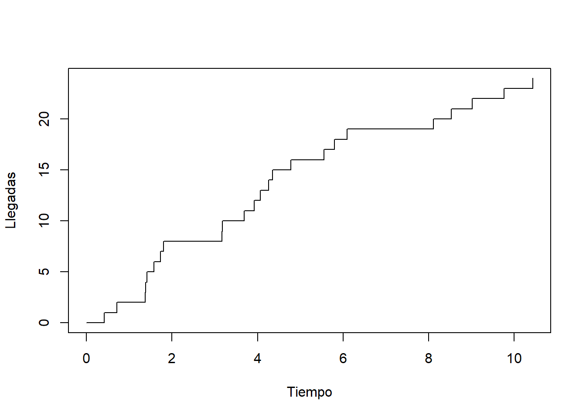
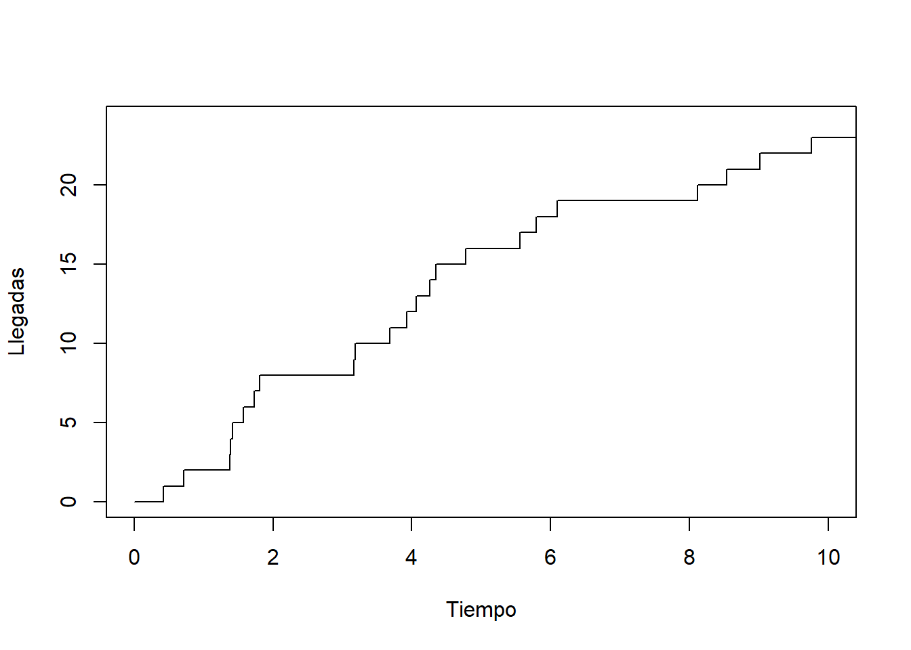
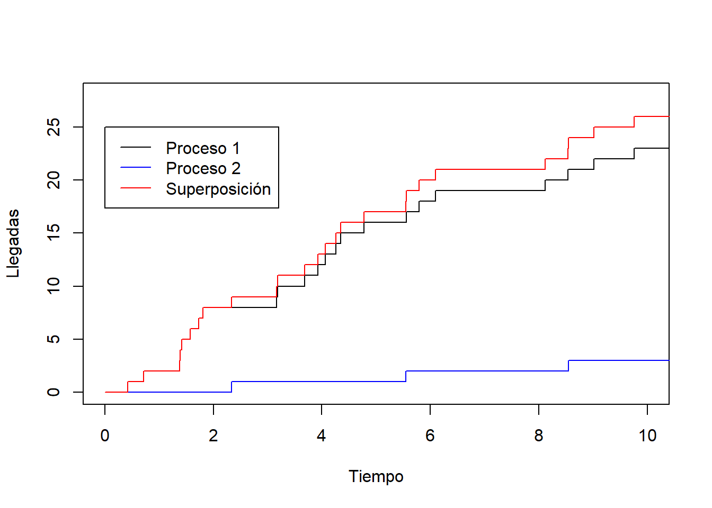
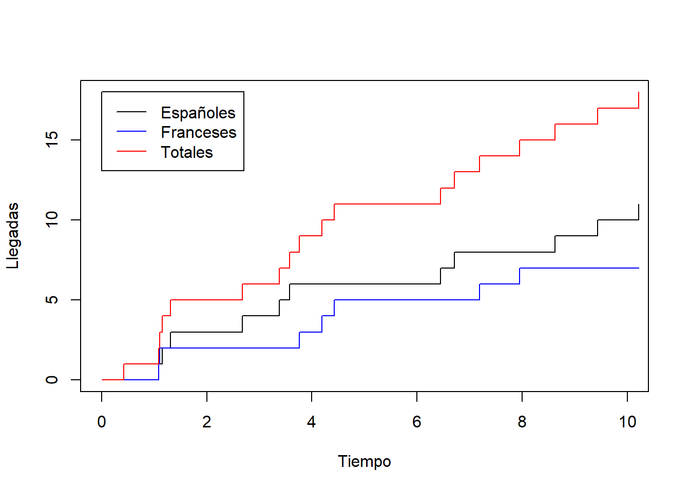
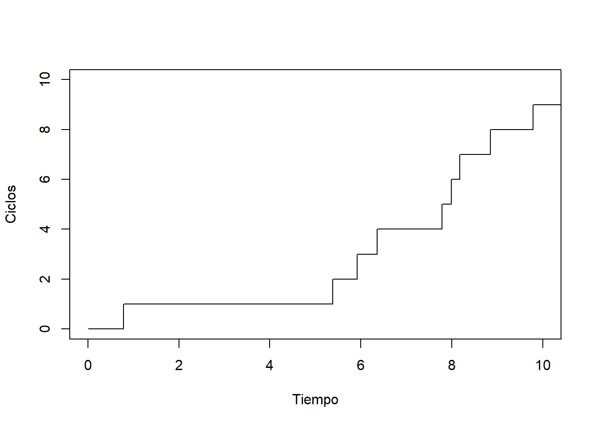
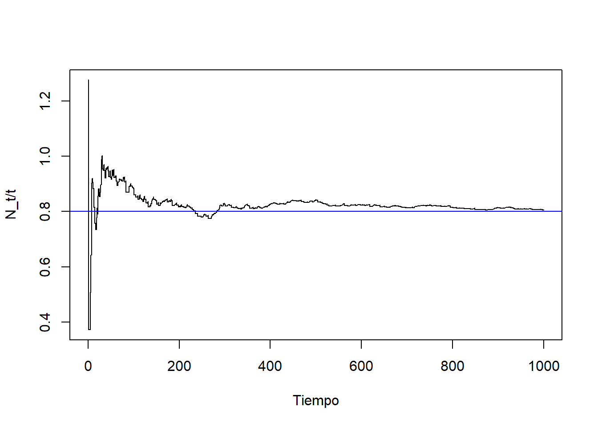

4 Tema 3. Procesos de Poisson
En este capítulo vamos a ver un tipo de procesos estocásticos que son utilizados para contar la ocurrencia en el tiempo o el espacio de cierto evento aleatorio. Se trata de los procesos de Poisson y, más en general, los procesos de conteo. Este tipo de procesos pueden usarse para contar las llegadas de clientes a una tienda, apariciones de defectos en una línea de producción, las solicitudes individuales a un servidor de internet, el paso de coches por un tramo de carretera, las llegadas de emails a la bandeja de entrada, las ocurrencias de cierto tipo de delito en una gran ciudad, etc.
4.1 Procesos de conteo
Definición 4.1 (Proceso de conteo) Un proceso estocástico en tiempo continuo \((N_t)_{t\in [0,\infty)}\) se dice que es un proceso de conteo si se verifica:
\(N_t\ge 0\).
\(N_t\) toma valores enteros.
Si \(s<t\) entonces \(N_s\le N_t\).
En particular, son procesos estocásticos de tiempo continuo y estado discreto. El valor \(N_t\) se interpreta como el número de veces que ocurre el evento aleatorio en estudio durante el intervalo de tiempo \([0,t]\). En particular, si \(s<t\), entonces \(N_t-N_s\) representa el número de veces que ocurre el evento aleatorio durante el intervalo de tiempo \((s,t]\). Para fijar ideas, vamos a considerar que estamos contando las llegadas de clientes a un establecimiento. Por ejemplo, si \(N_1=4\) tendremos que han llegado 4 clientes durante el intervalo de tiempo \([0,1]\). Si \(N_2-N_1=3\), tendremos que han llegado 3 clientes durante el intervalo de tiempo \((1,2]\). El tiempo podría medirse por ejemplo en horas.
Definición 4.2 Un proceso estocástico \((X_t)_{t\in[0,\infty)}\) se dice que tiene incrementos independientes si para toda sucesión de tiempos \(0\le t_1<t_2<\ldots< t_n\) las variables aleatorias
\[ X_{t_2}-X_{t_1},\quad X_{t_3}-X_{t_2},\quad \ldots,\quad X_{t_n}-X_{t_{n-1}},\quad \]
son independientes.
Un ejemplo de proceso con incrementos independientes es el movimiento Browniano. Para un proceso de conteo \((N_t)_{t\in [0,\infty)}\) con incrementos independientes contando las llegadas de clientes (o cualquier otro evento aleatorio), se tendrá que los números de llegadas en intervalos disjuntos
\[ (t_1,t_2],\quad (t_2,t_3],\quad \ldots,\quad (t_{n-1},t_n] \]
son independientes.
Supongamos que queremos calcular la probabilidad de que haya 2 llegadas en el intervalo \((1,2]\) y 3 llegadas en el intervalo \((2,3]\). Como los intervalos \((1,2]\) y \((2,3]\) son disjuntos, tendremos
\[ \mathbb{P}\Big(\mbox{ 2 llegadas en }(1,2]\mbox{ y 3 llegadas en }(2,3]\Big)= \mathbb{P}\Big(\mbox{ 2 llegadas en }(1,2]\Big)\cdot\mathbb{P}\Big(\mbox{ 2 llegadas en }(2,3]\Big). \]
4.2 Proceso de Poisson
El proceso de conteo más usado es el proceso de Poisson. En esta sección veremos su definición y principales propiedades. Antes de introducir este concepto, necesitamos recordar la distribución de Poisson.
4.2.1 Distribución de Poisson
Definición 4.3 Una variable aleatoria discreta \(X\) se dice que tiene distribución de Poisson de parámetro \(\lambda>0\) si toma valores en \(\{0,1,2,3,\ldots\}\) y tiene función puntual de probabilidad
\[ \mathbb{P}(X=k)=\frac{\lambda^k e^{-\lambda}}{k!}\quad\mbox{ para todo }k\in\{0,1,2,\ldots\}. \]
En ese caso escribimos \(X\sim{\rm Poisson}(\lambda)\).
Algunas propiedades de la distribución de Poisson que conviene recordar son las siguientes.
Proposición 4.1 Supongamos que \(X\sim{\rm Poisson}(\lambda)\). Entonces \(\mathbb{E}(X)=\lambda\) y \({\rm Var}(X)=\lambda\).
La suma de variables Poisson independientes es Poisson. Más concretamente, tenemos lo siguiente.
Proposición 4.2 Supongamos que \(X_1,X_2,\ldots,..,X_n\) son variables aleatorias independientes con \(X_i\sim{\rm Poisson}(\lambda_i)\). Entonces \[ X_1+X_2+\ldots+X_n\sim{\rm Poisson}(\lambda_1+\lambda_2+\ldots+\lambda_n). \]
Las variables Poisson pueden ser interpretadas como el límite en distribución de variables aleatorias binomiales. Más específicamente tenemos lo siguiente.
Proposición 4.3 Consideremos una sucesión de variables aleatorias \(Y_1,Y_2,\ldots\), donde \(Y_n\sim{\rm Binomial}(n,p_n)\) con \(p_n=\lambda/n\) para cierto \(\lambda>0\). Entonces la función puntual de probabilidad de \(Y_n\) converge a la función puntual de probabilidad de una variable \({\rm Poisson}(\lambda)\), es decir,
\[ \lim_{n\to\infty}\mathbb{P}(Y_n=k)=\frac{\lambda^k e^{-\lambda}}{k!}\quad\mbox{ para todo }k\in\{0,1,2,\ldots\}. \]
Demostración.
Fijado \(k\in\{0,1,2,\ldots\}\), como \(Y_n\sim{\rm Binomial}(n,p_n)\), tenemos
\[ \begin{aligned} \mathbb{P}(Y_n=k)&=\binom{n}{k} p_n^k (1-p_n)^{n-k}\\ &=\frac{n!}{(n-k)!k!} \left(\frac{\lambda}{n}\right)^k \left(1-\frac{\lambda}{n}\right)^{n-k}\\ &=\frac{n!}{(n-k)!k!} \left(\frac{\lambda}{n}\right)^k \left(1-\frac{\lambda}{n}\right)^{n}\left(1-\frac{\lambda}{n}\right)^{-k}\\ &=\frac{n!}{(n-k)! n^k}\frac{\lambda^k}{k!} \left(1-\frac{\lambda}{n}\right)^{n}\left(1-\frac{\lambda}{n}\right)^{-k}. \end{aligned} \tag{4.1}\]
Por otro lado, observamos que
\[ \lim_{n\to\infty}\left(1-\frac{\lambda}{n}\right)^{n}=e^{-\lambda}, \]
\[ \lim_{n\to\infty}\left(1-\frac{\lambda}{n}\right)^{-k}=1, \]
\[ \begin{aligned} \lim_{n\to\infty}\frac{n!}{(n-k)! n^k}&=\lim_{n\to\infty}\left(\frac{n}{n}\cdot\frac{n-1}{n}\cdot\frac{n-2}{n}\cdot\ldots \cdot\frac{n-(k-1)}{n}\right)\\ &=\lim_{n\to\infty}\left(1\cdot\left(1-\frac{1}{n}\right)\cdot\left(1-\frac{2}{n}\right)\cdot\ldots \cdot\left(1-\frac{k-1}{n}\right)\right)=1, \end{aligned} \]
donde para calcular el último límite hemos usado que tenemos un número constante \(k\) de factores que convergen a \(1\).
Tomando límites cuando \(n\to\infty\) en Ecuación 4.1 teniendo en cuenta las anteriores igualdades, obtenemos el resultado deseado.\(\square\)
4.2.2 Definición de proceso de Poisson
El proceso de Poisson se usa para contar la ocurrencia de un evento aleatorio cuyas observaciones se dan en el tiempo con una frecuencia promedio constante \(\lambda\). Por ejemplo, supongamos que mediante la observación se llega a la conclusión de que a un establecimiento llegan, de media, 5 clientes por hora. Puesto que las llegadas son aleatorias, cada hora llegará un número de clientes que no tiene por qué ser exactamente igual a 5; sin embargo, dicha cifra se verificará en promedio al avanzar el tiempo.
Definición 4.4 (Proceso de Poisson) Un proceso de conteo \((N_t)_{t\in [0,\infty)}\) se dice que es un proceso de Poisson con tasa \(\lambda>0\) si se verifican las siguientes condiciones:
\(N_0=0\),
\(N_t\) tiene incrementos independientes,
Para cada \(t,s\ge 0\) se verifica que \(N_{t+s}-N_s\sim {\rm Poisson}(\lambda t)\).
Para justificar la definición anterior pensemos en los clientes que llegan al establecimiento. Supongamos que llegan de media \(\lambda\) clientes por hora. Sea \(N_t\) el número de clientes que han llegado a la tienda tras \(t\) horas. Queremos encontrar qué distribución debería seguir la variable aleatoria \(N_t\).
Para simplificar el problema, vamos a suponer en primer lugar que, dado \(n\in\mathbb{N}\), los clientes van llegando en instantes de tiempo equiespaciados
\[ 0<\frac{t}{n}<\frac{2t}{n}<\frac{3t}{n}<\ldots< t, \]
de forma que al final de cada intervalo \(\left(\frac{kt}{n},\frac{(k+1)t}{n}\right]\) podrá llegar un solo cliente con probabilidad \(p\), o no llegará ninguno con probabilidad \(1-p\). Además, consideramos que la llegada o no de un cliente en cada intervalo ocurre de forma independiente de lo que haya pasado en los intervalos anteriores.
Bajo estos supuestos, tenemos que el número total \(N_t\) de clientes llegados en el intervalo de tiempo \([0,t]\) sigue una distribución \({\rm Binomial}(n,p)\). En particular, como llegan de media \(\lambda\) clientes por hora, tendremos que
\[ \lambda t=\mathbb{E}(N_t)=n p. \]
Necesariamente, se tiene que verificar que \(p=\lambda t/n\). De esta manera obtenemos la probabilidad de llegada de un cliente en cada intervalo, la cual depende del número de subdivisiones \(n\) en el que dividimos el intervalo de tiempo.
Para pasar a tiempo continuo, tomemos límites cuando \(n\to\infty\). De este modo, como consecuencia de la Proposición Proposición 4.3, obtenemos que
\[ \mathbb{P}(N_t=k)=\frac{(t\lambda)^k e^{-\lambda t}}{k!},\quad k\in\{0,1,2,\ldots\}. \]
Concluimos que \(N_t\) sigue una distribución \({\rm Poisson}(\lambda t)\), lo cual justifica el punto 3 de la definición de Proceso de Poisson.
Es lógico considerar que los clientes que llegan en dos intervalos de tiempo disjuntos sean independientes, por lo que el proceso de conteo correspondiente debería tener incrementos independientes. Por lo cual, la condición 2 de la definición anterior es natural.
Como hemos observado arriba tenemos que \(\mathbb{E}(N_t)=\lambda t\), lo cual es también consecuencia de la condición 3. En particular, la tasa \(\lambda\) de un proceso de Poisson nos informa del número medio de llegadas por unidad de tiempo.
4.3 Tiempos de ocurrencia (llegada) en un Proceso de Poisson
Hemos visto que los procesos de Poisson surgen de manera natural cuando se trata de contar las llegadas de clientes a un establecimiento. En esta sección vamos a estudiar qué distribución de probabilidad sigue el tiempo aleatorio que pasa entre la llegada de dos clientes consecutivos.
4.3.1 Distribución exponencial
Recordemos que una variable aleatoria continua \(\tau\) tiene distribución exponencial de parámetro \(\lambda>0\), en cuyo caso escribimos \(\tau\sim {\rm Exp}(\lambda)\), si toma valores reales positivos y tiene función de densidad
\[ f(t)=\lambda e^{-\lambda t},\quad t>0. \]
Recordemos además que si \(\tau\sim{\rm Exp}(\lambda)\), entonces la función de distribución de \(\tau\) es \(F(t)=1-e^{-\lambda t}\).
En particular,
\[ \mathbb{P}(\tau>t)=1-F(t)=e^{-\lambda t}. \]
Las variables exponenciales suelen interpretarse como el tiempo de espera para la observación de un evento aleatorio. Por ejemplo, la llegada del primer cliente a una tienda, el tiempo de fallo de un sistema, el tiempo de quiebra de una entidad financiera, tiempo en el que una acción alcanza un determinado nivel, etc.
Proposición 4.4 Si \(\tau\sim{\rm Exp}(\lambda)\), entonces
\[ \mathbb{E}(\tau)=\frac{1}{\lambda},\quad {\rm Var}(\tau)=\frac{1}{\lambda^2}. \]
Si pensamos en la llegada del primer cliente a un establecimiento, la proposición anterior nos dice que el tiempo medio que esperaremos en observar llegar dicho cliente será \(1/\lambda\).
Por otro lado, tendremos que \(\mathbb{P}(\tau\le t)\) es la probabilidad que el primer cliente llegue en algún instante del intervalo de tiempo \([0,t]\). Por tanto, \(\mathbb{P}(\tau>t)\) es la probabilidad de que ningún cliente llegue durante el intervalo de tiempo \([0,t]\).
Una importante propiedad de las variables exponenciales es que no tienen memoria, es decir, tenemos lo siguiente.
4.3.2 Falta de memoria
Si \(\tau\sim {\rm Exp}(\lambda)\), entonces
\[ \mathbb{P}(\tau>s)=\mathbb{P}(\tau>t+s|\tau>t) \] para todo \(t,s>0\).
La anterior propiedad, conocida como falta de memoria de la distribución exponencial, quiere decir que la probabilidad de que en el intervalo de tiempo \([0,s]\) no haya ninguna llegada, es igual a la probabilidad de que en el intervalo de tiempo \([t,t+s]\) de igual longitud no haya ninguna llegada si en el intervalo de tiempo previo \([0,t]\) no ha habido llegadas, es decir,
\[ \mathbb{P}\left(\text{no hay llegadas en }[0,s]\right)= \mathbb{P}\left(\text{no hay llegadas en }[t,t+s]|\text{no hay llegadas en }[0,t] \right). \]
Por ejemplo, si en 30 minutos no ha llegado ningún cliente a la tienda, la probabilidad de esperar 10 minutos más y no ver ningún cliente es la misma que si no hubiéramos esperado los 30 minutos iniciales.
4.3.3 Modelización de tiempos de llegada y entre llegadas consecutivas
El siguiente resultado, para el cual no damos la demostración, caracteriza a los procesos de Poisson en términos de tiempos de espera exponenciales.
Teorema 4.1 (Caracterización proceso de Poisson) Un proceso estocástico \((N_{t})_{t\in[0,\infty)}\) es un proceso de Poisson con tasa \(\lambda\) si y sólo si existe una sucesión \(\tau_1,\tau_2,\tau_3,\ldots\) de variables aleatorias independientes con distribución \({\rm Exp}(\lambda)\) tal que
\[ N_t=\max\{n\colon \tau_1+\tau_2+\ldots+\tau_n\le t\}. \tag{4.2}\]
Podemos pensar en \(\tau_i\) como el tiempo de espera entre las llegadas, es decir, \(\tau_1\) es el tiempo transcurrido hasta la primera llegada, \(\tau_2\) es el tiempo trascurrido entre la primera y la segunda llegada, \(\tau_3\) es el tiempo entre la segunda y la tercera llegada, etc. De esta manera, \(T_n=\tau_1+\tau_2+\ldots+\tau_n\) es el tiempo transcurrido hasta la n-ésima llegada. En particular, la condición (Ecuación 4.2) puede ser reescrita como
\[ N_t=\max\{n\colon T_n\le t\}. \]
Si, por ejemplo, \(N_t=4\), la condición anterior nos dice que
\[ T_4 \le t < T_5. \]
En términos de llegadas, tenemos que en el instante \(t\) habrán llegado los cuatro primeros clientes, pero no el quinto.
Recordemos que \(\lambda\) era el promedio de llegadas por unidad de tiempo. Por otro lado, como \(\mathbb{E}(\tau)=1/\lambda\), tendremos que esperar de media \(1/\lambda\) unidades de tiempo entre cada dos llegadas sucesivas.
Recordemos que una variable aleatoria continua \(T\) tiene distribución gamma, en cuyo caso escribimos \(T\sim \Gamma(k,\lambda)\), si toma valores positivos y tiene función de densidad
\[ f(t)=\frac{\lambda^k}{\Gamma(k)} t^{k-1} e^{-\lambda t},\quad t>0, \]
donde \(\Gamma(k)\) es la función Gamma, la cual viene dada por \(\Gamma(k)=(k-1)!\) cuando \(k\) es entero.
La distribución gamma se obtiene cuando sumamos variables independientes con distribución exponencial. Concretamente, tenemos lo siguiente.
Proposición 4.5 Supongamos que \(\tau_1,\tau_2,\tau_3,\ldots\) son variables independientes con distribución \({\rm Exp}(\lambda)\). Entonces se verifica que
\[ T_n=\tau_1+\tau_2+\ldots+\tau_n\sim \Gamma(n,\lambda). \]
La anterior propiedad es muy útil para calcular probabilidades relativas a tiempos de llegada, ya que nos da la distribución del tiempo de llegada \(T_n\) del n-ésimo cliente.
4.3.4 Simulación de procesos de Poisson
Simular procesos de Poisson es sencillo usando los tiempos entre llegadas. Para ello basta simular los tiempos entre llegadas como variables aleatorias exponenciales independientes y contabilizar el número de llegadas ocurridas.
Veamos un ejemplo en R:
# Valores para simulación
lambda <- 2 # tasa (llegadas por unidad de tiempo)
T <- 10 # Intervalo de tiempo en el que observamos el proceso
# Simulación de los tiempos entre llegadas
set.seed(123)
tau <- NULL
i <- 1
while(sum(tau) < T){
tau[i] <- rexp(n = 1, rate = lambda)
i <- i+1
}
# Calculamos los valores del proceso de Poisson
tiempos <- c(0,cumsum(tau))
N <- 0:length(tau)
# Dibujamos la trayectoria
plot(tiempos, N, type = "s",
xlab = "Tiempo", ylab = "Llegadas", xlim=c(0, 10))
4.4 Transformaciones de procesos de Poisson
En esta sección vamos a ver dos tipos de transformaciones de procesos de Poisson, la superposición y la separación.
4.4.1 Superposición de procesos de Poisson independientes
Consideremos dos procesos de Poisson \((N^1_t)_{t\in[0,\infty)}\) y \((N^2_t)_{t\in[0,\infty)}\) independientes con tasas \(\lambda_1\) y \(\lambda_2\), respectivamente. Consideremos el proceso \((N_t)_{t\in[0,\infty)}\) definido como
\[ N_t=N^1_t+N^2_t\quad\mbox{ para todo }t\in[0,\infty). \]
Dados \(t,s\ge 0\), se tiene que los incrementos
\[ N_{t+s}^1-N_{s}^1\sim {\rm Poisson}(\lambda_1 t),\quad N_{t+s}^2-N_{s}^2\sim {\rm Poisson}(\lambda_2 t), \]
y son variables aleatorias independientes. Por tanto, debido a la Proposición Proposición 4.2 tenemos que
\[ N_{t+s}-N_t=(N^1_{t+s}-N^1_{s})+(N^2_{t+s}-N^2_{s}) \] sigue una distribución \({\rm Poisson}((\lambda_1+\lambda_2) t)\). Es más, \(N_0=N^1_0+N^2_0=0\), y el proceso \(N_t\) tiene incrementos independientes (por tenerlos \(N^1\) y \(N^2\)). Dado que se verifican todas las condiciones de la definición de proceso de Poisson, podemos concluir que el proceso \((N_t)_{t\in[0,\infty)}\) es de Poisson con tasa \(\lambda_1+\lambda_2\).
En general, tendremos lo siguiente.
Teorema 4.2 (Superposición) Sean \((N_t^1),(N_t^2),\ldots,(N_t^m)\) procesos de Poisson independientes con tasas \(\lambda_1,\lambda_2,\ldots,\lambda_m\), respectivamente. Sea además
\[ N_t=N_t^1+N_t^2+\ldots+N_t^m\quad\mbox{ para todo }t\in[0,\infty). \]
Entonces el proceso \((N_t)_{t\in[0,\infty)}\) es un proceso de Poisson con tasa \(\lambda_1+\lambda_2+\ldots+\lambda_m\).
A continuación simulamos en R la superposición de dos procesos de Poisson independientes:
# Valores para simulación de los procesos
lambda1 <- 2 # tasa del primer proceso de Poisson
lambda2 <- 0.5 # tasa del segundo proceso de Poisson
T <- 10 # Intervalo de tiempo en el que observamos el proceso
# Simulación de los tiempos entre llegadas
set.seed(123)
tau1 <- NULL
tau2 <- NULL
i <- 1
while(sum(tau1) < T){
tau1[i] <- rexp(n = 1, rate = lambda1)
i <- i+1
}
i <- 1
while(sum(tau2) < T){
tau2[i] <- rexp(n = 1, rate = lambda2)
i <- i+1
}
# Definimos los timpos y los valores correspondientes del proceso de Poisson 1
tiempos1 <- c(0,cumsum(tau1))
N1 <- 0:length(tau1)
# Definimos los tiempos y los valores correspondientes del proceso de Poisson 2
tiempos2 <- c(0,cumsum(tau2))
N2 <- 0:length(tau2)
# Definimos los tiempos y los valores correspondientes del proceso superposición
tiempos <- union(tiempos1, tiempos2)
tiempos <- sort(tiempos)
N <- 0:(length(tiempos)-1)
# Dibujamos la trayectoria del proceso 1
plot(tiempos1, N1, type = "s",
xlab = "Tiempo", ylab = "Llegadas", xlim = c(0,10), ylim=c(0, max(N)))
# Dibujamos la trayectoria del proceso 2
lines(tiempos2, N2, type = "s", col="blue")
# Dibujamos la trayectoria del proceso superposición
lines(tiempos, N, type = "s", col="red")
# Añadimos una leyenda
legend(0, 25, legend=c("Proceso 1", "Proceso 2", "Superposición"),
col=c("black", "blue", "red"), lty=c(1, 1, 1))
4.4.2 Separación de procesos de Poisson
Imaginemos una cafetería en los Pirineos donde los clientes, de España y de Francia, van llegando de acuerdo a un proceso de Poisson \((N_t)_{t\in[0,\infty)}\) con tasa de 10 clientes por hora. Supongamos además que el 60% de los clientes son españoles y el 40% de los clientes son franceses. De este manera, los clientes españoles tendrán su propio proceso de conteo \((N_t^1)_{t\in[0,\infty)}\) y, de la misma manera, los clientes franceses tendrán otro proceso de conteo \((N_t^2)_{t\in[0,\infty)}\). Nos preguntamos qué tipo de procesos son \((N_t^1)_{t\in[0,\infty)}\) y \((N_t^2)_{t\in[0,\infty)}\).
En general, un proceso de Poisson \((N_t)_{t\in[0,\infty)}\) puede ser separado en dos procesos \((N_t^1)_{t\in[0,\infty)}\) y \((N_t^2)_{t\in[0,\infty)}\) contando llegadas de “tipo 1” y “tipo 2”, de acuerdo a una sucesión \(Y_1,Y_2,\ldots\) de variables aleatorias independientes entre sí, e independientes del proceso \((N_t)_{t\in [0,\infty)}\), tal que
\[\mathbb{P}(Y_i=1)=p\quad\mbox{ y }\quad\mathbb{P}(Y_i=2)=1-p.\]
Intuitivamente, para cada llegada \(i\), podemos pensar en la variable aleatoria \(Y_i\) como un lanzamiento de moneda (no equilibrada si \(p\neq 1/2\)) realizado al producirse dicha llegada, de modo que si se obtiene cara (valor 1) se clasifica la llegada como de tipo 1, y si se obtiene cruz (valor 2) se clasifica la clasifica como de tipo 2.
De esta manera, si \(T_n=\tau_1+\tau_2+\ldots+\tau_n\) es el tiempo transcurrido hasta la n-ésima llegada, entonces los procesos \((N_t^1)_{t\in[0,\infty)}\) y \((N_t^2)_{t\in[0,\infty)}\) contando las llegadas de tipo 1 y las llegadas de tipo 2 hasta tiempo \(t\) vendrán respectivamente dados por
\[ N_t^1=\#\{n\colon Y_n=1,\:T_n\le t\},\quad N_t^2=\#\{n\colon Y_n=2,\:T_n\le t\}, \tag{4.3}\]
donde # denota el cardinal de un conjunto.
Tenemos el siguiente resultado.
Teorema 4.3 (Separación) Sea \((N_t)_{t\in[0,\infty)}\) un proceso de Poisson con tasa \(\lambda\). Consideremos que cada llegada es de tipo 1 con probabilidad \(p\) o de tipo 2 con probabilidad \(1-p\), independientemente de las demás llegadas y de \((N_t)_{t\in[0,\infty)}\). Entonces, los procesos \((N_t^1)_{t\in[0,\infty)}\) y \((N_t^2)_{t\in[0,\infty)}\) contando las llegadas de tipo 1 y las llegadas de tipo 2, respectivamente, verifican:
\((N_t^1)_{t\in[0,\infty)}\) es un proceso de Poisson con tasa \(\lambda p\).
\((N_t^2)_{t\in[0,\infty)}\) es un proceso de Poisson con tasa \(\lambda (1-p)\).
\((N_t^1)_{t\in[0,\infty)}\) y \((N_t^2)_{t\in[0,\infty)}\) son procesos de Poisson independientes.
Volvamos al ejemplo de la cafetería en los Pirineos. Dijimos que llegan una media de 10 clientes por hora, por lo que el correspondiente proceso de Poisson \((N_t)_{t\in [0,\infty)}\) tendrá tasa \(\lambda=10\). Al ser el 60% de los clientes que llegan españoles y el 40% franceses, tendremos que los clientes españoles llegarán a la cafetería siguiendo un proceso de Poisson con tasa \(10\cdot 0.6=6\), y los clientes franceses llegarán a la cafetería siguiendo un proceso de Poisson con tasa \(10\cdot 0.4=4\).
A continuación simulamos en R la separación del proceso de clientes en españoles y franceses:
# Valores para simulación de los procesos
lambda <- 10 # tasa del proceso de Poisson
p <- 0.6 # tasa del segundo proceso de Poisson
T <- 10 # Intervalo de tiempo en el que observamos el proceso
# Simulación de los tiempos entre llegadas y tipos de llegadas
set.seed(123)
tau <- NULL
y <- NULL
i <- 1
while(sum(tau) < T){
tau[i] <- rexp(n = 1, rate = lambda1)
y[i]=sample(c(1, 2), size = 1)
i <- i+1
}
# Definimos los tiempos y los valores de N
tiempos <- c(0,cumsum(tau))
N <- 0:length(tau)
# Definimos los valores del proceso de Poisson 1
N1 <- NULL
N1[y==1] <- 1
N1[y==2] <- 0
N1 <- c(0, cumsum(N1))
# Definimos los valores del proceso de Poisson 1
N2 <- NULL
N2[y==2] <- 1
N2[y==1] <- 0
N2 <- c(0, cumsum(N2))
# Dibujamos la trayectoria del proceso 1
plot(tiempos, N1, type = "s",
xlab = "Tiempo", ylab = "Llegadas", xlim = c(0, 10), ylim=c(0, max(N)))
# Dibujamos la trayectoria del proceso 2
lines(tiempos, N2, type = "s", col="blue")
# Dibujamos la trayectoria del proceso original
lines(tiempos, N, type = "s", col="red")
# Añadimos una leyenda
legend(0, 18, legend=c("Españoles", "Franceses", "Totales"),
col=c("black", "blue", "red"), lty=c(1, 1, 1))
4.5 Procesos de renovación
Hemos visto anteriormente que los procesos de Poisson son caracterizados como el proceso de conteo cuando los tiempos entre llegadas vienen dados por una sucesión \(\tau_1,\tau_2,\tau_3,\ldots\) de variables independientes y exponenciales con la misma tasa \(\lambda\). Una generalización de los procesos de Poisson son los procesos de renovación donde los tiempos entre llegadas son independientes e idénticamente distribuidos, pero no necesariamente siguen una distribución exponencial. Dicho concepto es definido formalmente como sigue.
Definición 4.5 (Proceso de renovación) Sean \(\tau_1,\tau_2,\tau_3,\ldots\) variables aleatorias no negativas (es decir, \(\tau_n\ge 0\)), independientes, e idénticamente distribuidas, de modo que \(\mathbb{P}(\tau_n=0)<1\) para todo \(n\). Llamamos proceso de renovación con tiempos entre llegadas \(\tau_1,\tau_2,\tau_3,\ldots\) al proceso estocástico \((N_t)_{t\in[0,\infty)}\) verificando \(N_0=0\) y
\[ N_t=\max\{n\colon T_n\le t\}, \tag{4.4}\]
donde \(T_n=\tau_1+\tau_2+\ldots+\tau_n\).
Al igual que con los procesos de Poisson interpretamos \(\tau_1,\tau_2,\tau_3,\ldots\) como los tiempos entre llegadas, por lo que \(T_n=\tau_1+\tau_3+\ldots+\tau_n\) es el tiempo de la n-ésima llegada. La condición (Ecuación 4.4) implica que si \(N_t=n\), entonces
\[ T_{n}\le t < T_{n+1}. \]
Una importante propiedad de los procesos de renovación es la siguiente versión de la ley de los grandes números.
Teorema 4.4 (Ley de los grandes números para procesos de renovación) Sea \((N_t)_{t\in[0,\infty)}\) un proceso de renovación con tiempos entre llegadas \(\tau_1,\tau_2,\tau_3,\ldots\). Si \(\mathbb{E}(\tau_i)=\mu\), entonces con probabilidad 1 se verifica que
\[ \frac{N_t}{t}\to \frac{1}{\mu}\quad\mbox{ cuando }t\to\infty. \]
La interpretación del anterior resultado es sencilla. Si el tiempo medio entre llegadas (ciclos consecutivos) de un proceso de renovación es de \(\mu\) horas, entonces en el largo plazo se producirán \(1/\mu\) llegadas (ciclos) por hora. En el caso de un proceso de Poisson con tasa \(\lambda\) se tendrá que
\[ \frac{N_t}{t}\to \lambda\quad\mbox{ cuando }t\to\infty, \]
ya que los tiempos entre llegadas tienen media \(1/\lambda\).
La demostración del anterior resultado se basa en la ley fuerte de los grandes números la cual recordamos a continuación.
Lema 4.1 (Ley fuerte de los grandes números) Sean \(\tau_1,\tau_2,\tau_3,\ldots\) variables aleatorias i.i.d. con \(\mathbb{E}(\tau_i)=\mu\). Entonces con probabilidad 1 se verifica que
\[ \frac{T_n}{n}\to \mu\quad\mbox{ cuando }n\to\infty, \]
donde \(T_n=\tau_1+\tau_2+\ldots+\tau_n\) para cada \(n\in\mathbb{N}\).
A continuación damos la demostración de la ley de los grandes números para procesos de renovación.
Demostración del Teorema Teorema 4.4.
Para cada \(n\in\mathbb{N}\), sea \(T_n=\tau_1+\tau_2+\ldots+\tau_n\). Como las variables \(\tau_1,\tau_2,\tau_3,\ldots\) son i.i.d. con media \(\mu\), la ley fuerte de los grandes números nos dice que, con probabilidad 1, se verifica
\[ \frac{T_n}{n}\to \mu\quad\mbox{ cuando }n\to\infty. \tag{4.5}\]
Ahora, por definición de proceso de renovación tenemos que
\[ T_{N_t}\le t < T_{N_t+1}. \]
Dividiendo entre \(N_t\) tenemos que
\[ \frac{T_{N_t}}{N_t}\le \frac{t}{N_t} < \frac{T_{N_t+1}}{N_t}. \]
De ahí se sigue que
\[ \frac{T_{N_t}}{N_t}\le \frac{t}{N_t} < \frac{T_{N_t+1}}{N_t+1}\frac{N_t+1}{N_t}. \tag{4.6}\]
Puesto que las trayectorias de \(N_t\) son crecientes, dando infinitos saltos de longitud 1, tendremos que \(\lim_{t\to \infty}N_t=\infty\). Como consecuencia de (Ecuación 4.5) se verifica, con probabilidad 1, que
\[ \lim_{t\to \infty}\frac{T_{N_t}}{N_t}=\mu. \]
Por las misma razones también se cumplirá, con probabilidad 1, que
\[ \lim_{t\to \infty} \frac{T_{N_t+1}}{N_t+1}\frac{N_t+1}{N_t}=\mu. \]
Finalmente, tomando límites en (Ecuación 4.6) cuando \(t\to\infty\), y teniendo en cuenta lo anterior, llegamos a la conclusión deseada, ya que \(t/N_t\) se encuentra, con probabilidad 1, entre dos sucesiones las cuales convergen a \(\mu\). \(\square\)
Volvamos al ejemplo donde una máquina se estropea y es reparada reiteradas veces. Supongamos que, de media, la máquina tarda una hora en estropearse, y quince minutos en ser reparada. Supongamos, además, que cada tiempo de fallo \(\alpha_i\) y cada tiempo de reparación \(\beta_i\) siguen distribuciones exponenciales. De este modo, \(\alpha_i\sim {\rm Exp}(1)\) y \(\beta_i\sim {\rm Exp}(4)\). El proceso de renovación resultante puede ser simulado fácilmente en R.
# Fijemos los valores de los parámetros
lambda_1 <- 1 # tasa de fallo
lambda_2 <- 4 # tasa de reparación
T <- 10 # Intervalo de tiempo en el que observamos el proceso
# Simulación de los tiempos entre llegadas
set.seed(13)
tau <- NULL
i <- 1
while(sum(tau) < T){
alpha <- rexp(n = 1, rate = lambda_1)
beta <- rexp(n = 1, rate = lambda_2)
tau[i] <- alpha + beta
i <- i+1
}
# Calculamos los valores del proceso de renovación
tiempos <- c(0,cumsum(tau))
N <- 0:length(tau)
# Dibujamos la trayectoria
plot(tiempos, N, type = "s",
xlab = "Tiempo", ylab = "Ciclos", xlim=c(0, 10))
El tiempo medio de cada ciclo es \(\mathbb{E}(\tau_i)=\mathbb{E}(\alpha_i)+\mathbb{E}(\beta_i)=1+1/4=5/4\). Por tanto, la ley de los grandes números para procesos de renovación nos dice que
\[ \frac{N_t}{t}\to \frac{4}{5}\quad\mbox{ cuando }t\to\infty. \]
Vamos a comprobar dicho resultado simulando una trayectoria a un plazo elevado de tiempo (por ejemplo, \(T=1000\)), y dibujando la gráfica del cociente \(N_t/t\).
# Fijemos los valores de los parámetros
lambda_1 <- 1 # tasa de fallo
lambda_2 <- 4 # tasa de reparación
T <- 1000 # Intervalo de tiempo en el que observamos el proceso
# Simulación de los tiempos entre llegadas
set.seed(13)
tau <- NULL
i <- 1
while(sum(tau) < T){
alpha <- rexp(n = 1, rate = lambda_1)
beta <- rexp(n = 1, rate = lambda_2)
tau[i] <- alpha + beta
i <- i+1
}
tiempos <- c(0,cumsum(tau))
N <- 0:length(tau)
cociente <- N / tiempos
# Dibujamos la trayectoria
plot(tiempos, cociente, type = "S",
xlab = "Tiempo", ylab = "N_t/t", xlim=c(0, 1000))
# Dibujamos una línea horizontal a la altura de la inversa de la media
abline(h=4/5, col="blue")